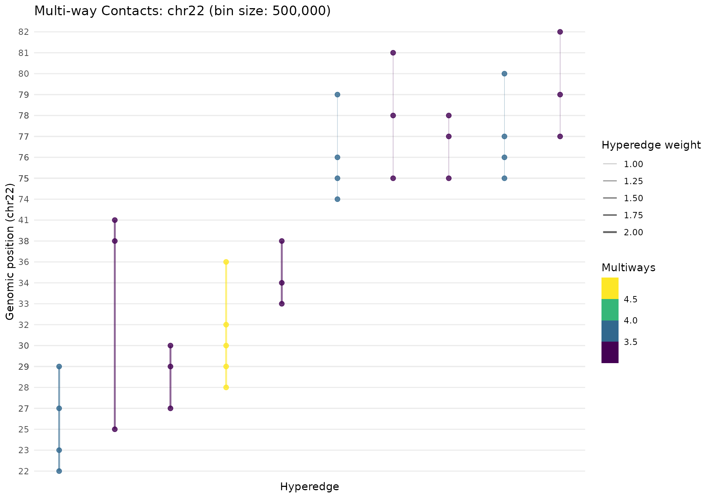
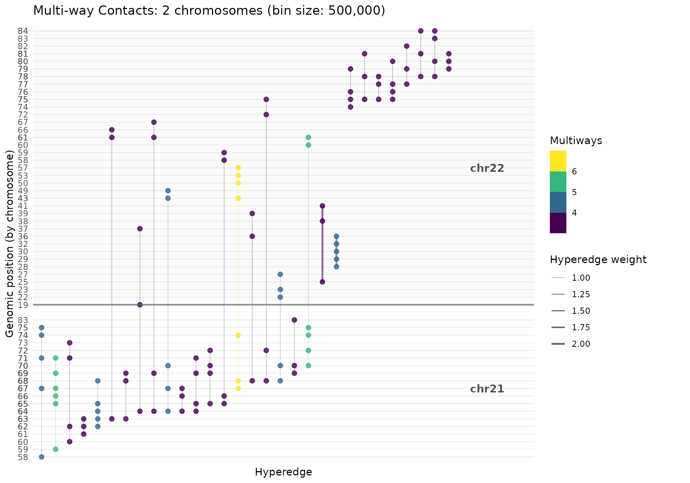
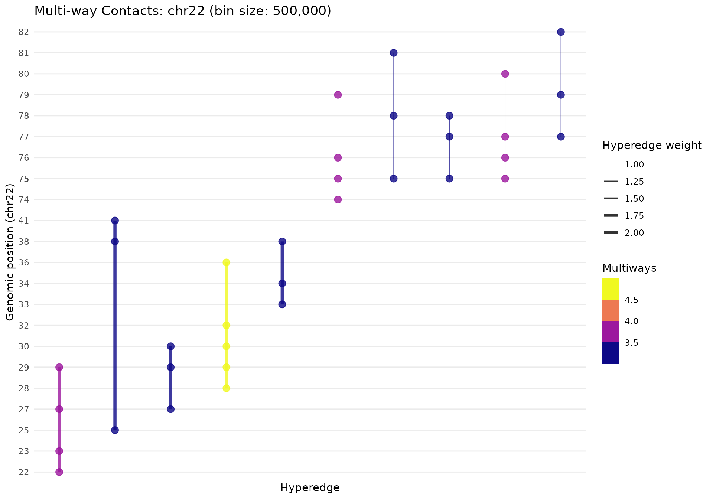
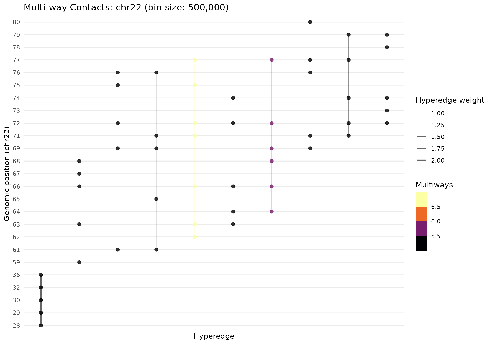
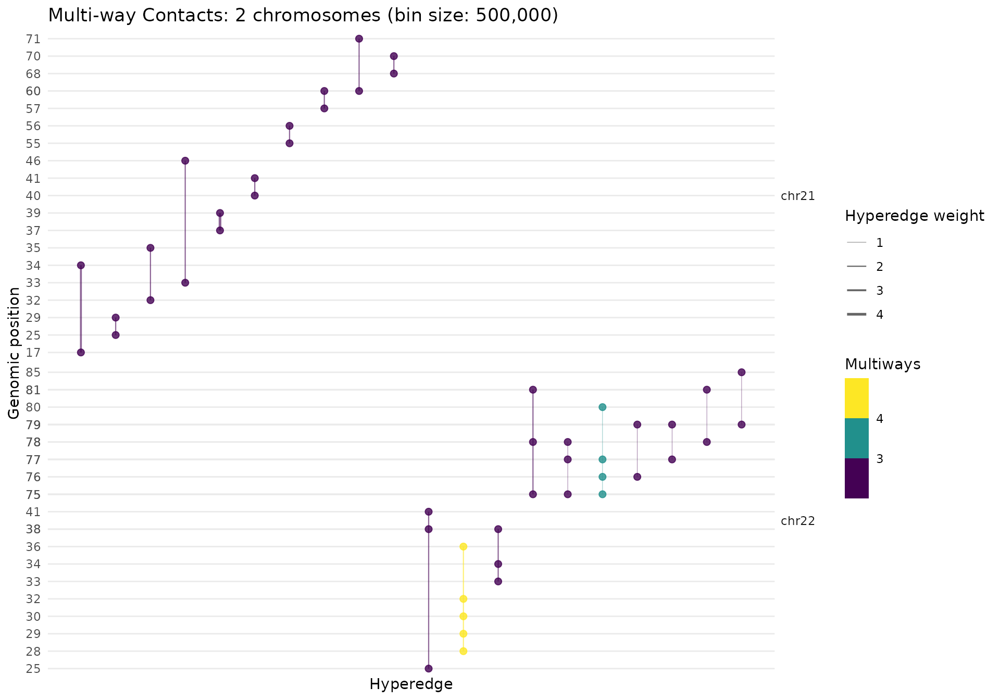
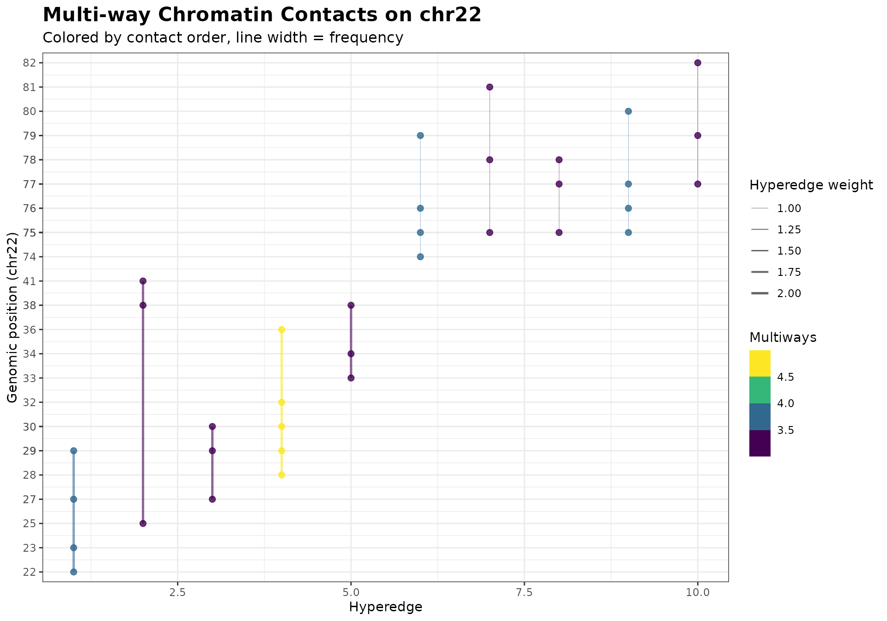
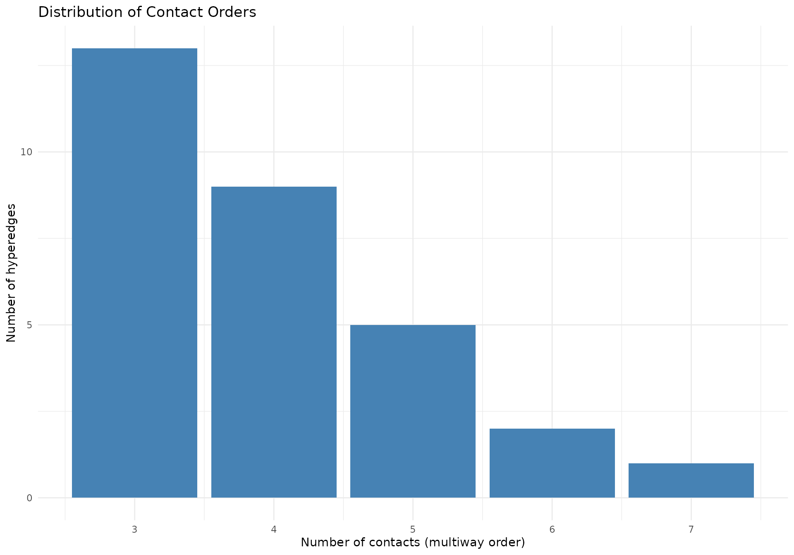
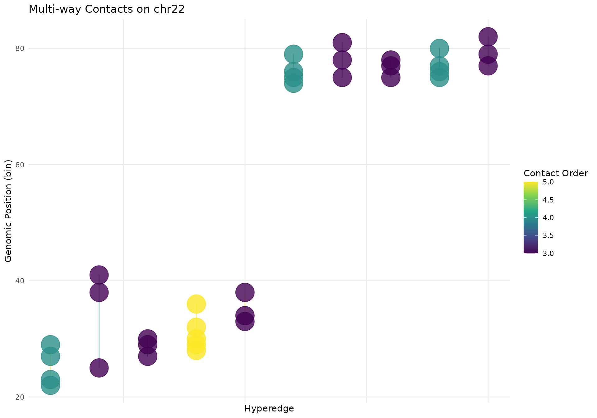
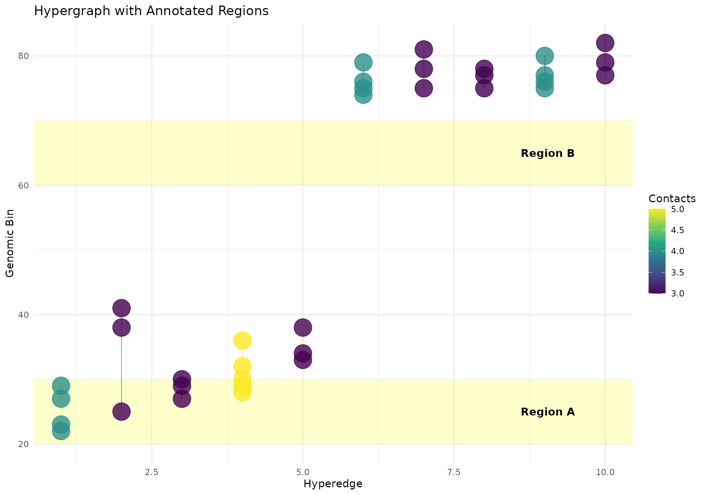
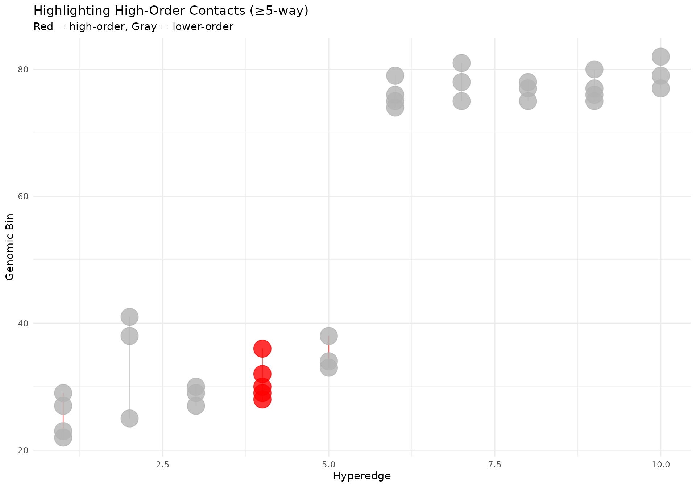

Multi-way Contact Analysis with Hypergraphs
Minghao Jiang
2025-12-15
Source:vignettes/hypergraph.Rmd
hypergraph.RmdOverview
Pore-C and similar long-read technologies capture multi-way chromatin contacts where a single DNA molecule can contact 3, 4, 5, or more genomic loci simultaneously. Traditional Hi-C analysis focuses on pairwise interactions, but multi-way contacts provide richer information about:
- Higher-order chromatin structure: TAD hubs, chromatin loops involving multiple enhancers
- Regulatory complexity: Multi-enhancer clusters coordinating gene expression
- Phase separation: Condensate formation with many participants
This vignette shows how to analyze and visualize multi-way contacts
using hypergraph representations with the
MultiWayContacts S4 class, where:
- Nodes (vertices) = Genomic bins
- Hyperedges = Reads connecting multiple bins
Key Concepts
What is a Hypergraph?
A hypergraph is a generalization of a graph where edges (called hyperedges) can connect any number of vertices (nodes), not just two.
For chromatin contacts:
- Pairwise contact (Hi-C): edge connecting 2 bins
- 3-way contact: hyperedge connecting 3 bins
- N-way contact: hyperedge connecting N bins
Getting Started
Load required libraries:
load_pkg <- function(pkgs) {
for (pkg in pkgs) suppressMessages(require(pkg, character.only = TRUE))
}
load_pkg(c("dplyr", "ggplot2", "gghic"))Example Data Format
Your pairs file should be tab-separated with at least these columns:
read_name chrom1 pos1 chrom2 pos2
read_001 chr1 1000 chr1 5000
read_001 chr1 1000 chr1 9000
read_002 chr2 2000 chr2 8000
...Each row is a pairwise contact from a read. A read with 4 contacts generates 6 rows (all pairs).
Prepare Example Data
For this vignette, we’ll create synthetic Pore-C data and save it to a temporary file:
set.seed(42)
# Simulate multi-way contacts on multiple chromosomes
n_reads <- 500
# Chromosome information
chroms <- data.frame(
chrom = c("chr21", "chr22"),
length = c(46e6, 50e6), # 46 Mb and 50 Mb
stringsAsFactors = FALSE
)
# Generate reads with varying numbers of contacts
read_data <- lapply(seq_len(n_reads), function(i) {
read_name <- sprintf("read_%05d", i)
# 20% chance of trans-chromosomal contacts
is_trans <- runif(1) < 0.2
if (is_trans) {
# Trans-chromosomal: contacts on both chromosomes
n_contacts_chr1 <- sample(2:4, 1)
n_contacts_chr2 <- sample(2:4, 1)
# Generate positions on chr21
center1 <- runif(1, 10e6, chroms$length[1] - 10e6)
spread1 <- runif(1, 1e6, 3e6)
pos_chr1 <- sort(pmax(1, pmin(
chroms$length[1],
rnorm(n_contacts_chr1, center1, spread1)
)))
# Generate positions on chr22
center2 <- runif(1, 10e6, chroms$length[2] - 10e6)
spread2 <- runif(1, 1e6, 3e6)
pos_chr2 <- sort(pmax(1, pmin(
chroms$length[2],
rnorm(n_contacts_chr2, center2, spread2)
)))
# Create all pairwise combinations
all_positions <- list(
chr1 = data.frame(chrom = chroms$chrom[1], pos = as.integer(pos_chr1)),
chr2 = data.frame(chrom = chroms$chrom[2], pos = as.integer(pos_chr2))
)
all_contacts <- rbind(all_positions$chr1, all_positions$chr2)
n_total <- nrow(all_contacts)
if (n_total < 2) {
return(NULL)
}
pairs_list <- combn(n_total, 2, simplify = FALSE)
do.call(rbind, lapply(pairs_list, function(pair) {
data.frame(
read_name = read_name,
chrom1 = all_contacts$chrom[pair[1]],
pos1 = all_contacts$pos[pair[1]],
chrom2 = all_contacts$chrom[pair[2]],
pos2 = all_contacts$pos[pair[2]],
stringsAsFactors = FALSE
)
}))
} else {
# Intra-chromosomal: contacts on single chromosome
chr_idx <- sample(1:2, 1, prob = c(0.3, 0.7))
chr <- chroms$chrom[chr_idx]
chr_length <- chroms$length[chr_idx]
n_contacts <- sample(3:8, 1, prob = c(0.3, 0.25, 0.2, 0.15, 0.07, 0.03))
center <- runif(1, 10e6, chr_length - 10e6)
spread <- runif(1, 1e6, 5e6)
positions <- sort(pmax(1, pmin(
chr_length,
rnorm(n_contacts, center, spread)
)))
if (n_contacts < 2) {
return(NULL)
}
pairs <- combn(n_contacts, 2, simplify = FALSE)
do.call(rbind, lapply(pairs, function(pair) {
data.frame(
read_name = read_name,
chrom1 = chr,
pos1 = as.integer(positions[pair[1]]),
chrom2 = chr,
pos2 = as.integer(positions[pair[2]]),
stringsAsFactors = FALSE
)
}))
}
})
pairs_df <- do.call(rbind, read_data)
# Add some noise
noise_pairs <- do.call(rbind, lapply(1:100, function(i) {
chr <- sample(chroms$chrom, 1)
chr_length <- chroms$length[chroms$chrom == chr]
data.frame(
read_name = sprintf("noise_%04d", i),
chrom1 = chr,
pos1 = sample(1:chr_length, 1),
chrom2 = chr,
pos2 = sample(1:chr_length, 1),
stringsAsFactors = FALSE
)
}))
pairs_df <- rbind(pairs_df, noise_pairs)
# Save to temporary file
pairs_file <- tempfile(fileext = ".pairs.gz")
gz <- gzfile(pairs_file, "w")
write.table(pairs_df, gz, sep = "\t", quote = FALSE, row.names = FALSE)
close(gz)
# Summary
cat(sprintf(
"Generated %d pairwise contacts from %d reads\n",
nrow(pairs_df), length(unique(pairs_df$read_name))
))
#> Generated 5319 pairwise contacts from 600 reads
trans_contacts <- sum(pairs_df$chrom1 != pairs_df$chrom2)
cat(sprintf(
" Intra-chromosomal: %d (%.1f%%)\n",
nrow(pairs_df) - trans_contacts,
100 * (nrow(pairs_df) - trans_contacts) / nrow(pairs_df)
))
#> Intra-chromosomal: 4438 (83.4%)
cat(sprintf(
" Trans-chromosomal: %d (%.1f%%)\n",
trans_contacts, 100 * trans_contacts / nrow(pairs_df)
))
#> Trans-chromosomal: 881 (16.6%)
head(pairs_df, 10)
#> read_name chrom1 pos1 chrom2 pos2
#> 1 read_00001 chr21 27651551 chr21 31762442
#> 2 read_00001 chr21 27651551 chr21 33514326
#> 3 read_00001 chr21 31762442 chr21 33514326
#> 4 read_00002 chr21 21721090 chr21 28230868
#> 5 read_00002 chr21 21721090 chr21 31627427
#> 6 read_00002 chr21 28230868 chr21 31627427
#> 7 read_00003 chr21 25627609 chr21 25874411
#> 8 read_00003 chr21 25627609 chr21 26736871
#> 9 read_00003 chr21 25874411 chr21 26736871
#> 10 read_00004 chr22 6959097 chr22 9658680Workflow with MultiWayContacts
The MultiWayContacts S4 class provides a streamlined,
object-oriented workflow for analyzing multi-way contacts. The typical
analysis follows these steps:
-
Create
MultiWayContactsobject - Import pairs data
- Build hypergraph
- Tidy to long format
- Select top hyperedges
-
Visualize with
gghypergraph()
Single Chromosome Analysis
# Create MultiWayContacts object for chr22
mc_chr22 <- MultiWayContacts(pairs_path = pairs_file, focus = "chr22")
# Complete workflow using pipes
mc_chr22 <- mc_chr22 |>
import() |> # Load pairs data
build(
bin_size = 500000L, # 500 Kb bins
quantile = 0.80, # Top 20% contacts
min_multiway = 3
) |> # ≥3-way contacts
gghic::tidy() |> # Convert to long format
gghic::select(n_intra = 10) # Select top hyperedges
#> Reading pairs from file using C implementation...
#> Reading pairs from: /tmp/RtmpE1s78e/file20e87a75afa.pairs.gz
#> Filtering for chromosome: chr22
#> Mode: (intra-chromosomal only)
#>
#> Total: 5320 lines processed, 2779 contacts retained
#> Processing 2,779 contacts (chr22)
#> Removed 471 duplicate pairwise contacts within reads (2,308 remaining)
#> Filtering bin pairs with >= 3 contacts (80% quantile)
#> Retained 1,337 contacts from 341 reads
#> Estimated matrix size: 0.0 GB, System RAM: 15.6 GB (threshold: 7.8 GB)
#> Identifying unique hyperedge patterns...
#> Removed 14 duplicate hyperedges (327 unique patterns)
#> Final hypergraph: 68 bins, 238 unique hyperedges (min 3-way contacts)
# Visualize
gghypergraph(mc_chr22, color_by = "n_multiways", palette = "viridis")
Multiple Chromosomes
# Analyze both chr21 and chr22
mc_multi <- MultiWayContacts(
pairs_path = pairs_file, focus = c("chr21", "chr22")
)
mc_multi <- mc_multi |>
import(inter_chrom = TRUE) |>
build(bin_size = 500000L, quantile = 0.80, min_multiway = 3) |>
gghic::tidy() |>
gghic::select(n_intra = 10, n_inter = 10)
#> Reading pairs from file using C implementation...
#> Reading pairs from: /tmp/RtmpE1s78e/file20e87a75afa.pairs.gz
#> Filtering for 2 chromosomes
#> Mode: (intra- and inter-chromosomal)
#>
#> Total: 5320 lines processed, 5319 contacts retained
#> Processing 5,319 contacts (2 chromosomes)
#> Removed 872 duplicate pairwise contacts within reads (4,447 remaining)
#> Filtering bin pairs with >= 2 contacts (80% quantile)
#> Retained 2,873 contacts from 496 reads
#> Estimated matrix size: 0.0 GB, System RAM: 15.6 GB (threshold: 7.8 GB)
#> Identifying unique hyperedge patterns...
#> Removed 3 duplicate hyperedges (493 unique patterns)
#> Final hypergraph: 138 bins, 435 unique hyperedges (min 3-way contacts)
# Faceted view (separate panels per chromosome)
gghypergraph(mc_multi, facet_chrom = FALSE)
Method Details
import()
Loads pairs data from file. The data can be filtered to:
- Specific chromosome(s) (via
focusparameter in constructor) - Intra-chromosomal only (default) or include inter-chromosomal
(
inter_chrom = TRUE)
# Intra-chromosomal only (default)
mc <- MultiWayContacts(pairs_path) |>
import()
# Include inter-chromosomal
mc <- MultiWayContacts(pairs_path) |>
import(inter_chrom = TRUE)build()
Constructs the hypergraph through several steps:
- Binning: Aggregate contacts into genomic bins
-
Filtering: Remove low-frequency bin pairs (by
quantilethreshold) - Incidence matrix: Build sparse matrix (bins × reads)
- Deduplication: Merge identical hyperedge patterns
-
Multiway filtering: Keep only hyperedges with ≥
min_multiwaycontacts
Parameters:
-
bin_size: Genomic bin size (default 1 Mb). Smaller = higher resolution but sparser -
quantile: Threshold for bin pair filtering (default 0.85). Higher = more stringent -
min_multiway: Minimum contacts per hyperedge (default 2)
tidy()
Converts the sparse incidence matrix to a tidy long-format data frame.
Parameters:
-
max_hyperedges: Subset to top N hyperedges by contact order (default: all) -
weight_normalization: Weight transformation:-
"none": Raw frequency counts (default) -
"log": Log-transformed -
"by_order": Normalized within each contact order -
"minmax": Scaled to [0, 1]
-
select()
Selects top-weighted hyperedges for visualization. For each chromosome, selects:
- Top
n_intraintra-chromosomal hyperedges - Top
n_interinter-chromosomal hyperedges
If fewer intra-chromosomal hyperedges exist, the remaining quota is added to inter-chromosomal selection.
Parameters:
-
n_intra: Number of intra-chromosomal hyperedges per chromosome (default 5) -
n_inter: Number of inter-chromosomal hyperedges per chromosome (default 5) -
n_multiways_filter: Keep only specific contact orders (e.g.,c(3, 4)) -
chroms: Focus on specific chromosome(s) -
append: Add to existing selection (TRUE) or replace (FALSE)
# Select more hyperedges
mc |>
gghic::select(n_intra = 15, n_inter = 10)
# Only 3-way and 4-way contacts
mc |>
gghic::select(n_multiways_filter = c(3, 4))
# Focus on chr1
mc |>
gghic::select(chroms = "chr1", append = FALSE)
# Accumulate selections
mc |>
gghic::select(chroms = "chr1", append = FALSE) |>
gghic::select(chroms = "chr2", append = TRUE)gghypergraph()
Creates a ggplot2 visualization of selected hyperedges.
Parameters:
-
point_size: Size of bin points (default 2) -
line_width: Base width of hyperedge lines (default 0.3) -
line_alpha: Transparency of lines (default 0.6) -
color_by: Variable for coloring ("n_multiways"or other) -
palette: Color palette ("viridis","magma","plasma", etc.) -
facet_chrom: Separate panels per chromosome (TRUE) or composite y-axis (FALSE)
gghypergraph(
mc_chr22,
point_size = 3,
line_width = 0.5,
line_alpha = 0.8,
palette = "plasma",
facet_chrom = TRUE
)
The plot shows:
- X-axis: Hyperedges (sorted by genomic position)
- Y-axis: Genomic bins (position within chromosome)
- Line width: Scales with hyperedge weight
- Line color: By contact order (number of bins)
Other Examples
Filtering by Contact Order
# Focus on high-order contacts only (≥5-way)
mc_high_order <- MultiWayContacts(pairs_file, focus = "chr22") |>
import() |>
build(bin_size = 500000L, quantile = 0.85, min_multiway = 5) |>
gghic::tidy() |>
gghic::select(n_intra = 10, n_inter = 0)
#> Reading pairs from file using C implementation...
#> Reading pairs from: /tmp/RtmpE1s78e/file20e87a75afa.pairs.gz
#> Filtering for chromosome: chr22
#> Mode: (intra-chromosomal only)
#>
#> Total: 5320 lines processed, 2779 contacts retained
#> Processing 2,779 contacts (chr22)
#> Removed 471 duplicate pairwise contacts within reads (2,308 remaining)
#> Filtering bin pairs with >= 4 contacts (85% quantile)
#> Retained 860 contacts from 301 reads
#> Estimated matrix size: 0.0 GB, System RAM: 15.6 GB (threshold: 7.8 GB)
#> Identifying unique hyperedge patterns...
#> Removed 36 duplicate hyperedges (265 unique patterns)
#> Final hypergraph: 60 bins, 46 unique hyperedges (min 5-way contacts)
gghypergraph(mc_high_order, palette = "inferno")
Comparing Chromosomes
# Select from both chromosomes independently
mc_compare <- MultiWayContacts(pairs_file, focus = c("chr21", "chr22")) |>
import() |>
build(bin_size = 500000L) |>
gghic::tidy() |>
gghic::select(n_intra = 10, n_inter = 5, append = FALSE)
#> Reading pairs from file using C implementation...
#> Reading pairs from: /tmp/RtmpE1s78e/file20e87a75afa.pairs.gz
#> Filtering for 2 chromosomes
#> Mode: (intra-chromosomal only)
#>
#> Total: 5320 lines processed, 4438 contacts retained
#> Processing 4,438 contacts (2 chromosomes)
#> Removed 97 reads with inter-chromosomal contacts (503 reads remaining)
#> Removed 649 duplicate pairwise contacts within reads (3,140 remaining)
#> Filtering bin pairs with >= 3 contacts (85% quantile)
#> Retained 1,290 contacts from 353 reads
#> Estimated matrix size: 0.0 GB, System RAM: 15.6 GB (threshold: 7.8 GB)
#> Identifying unique hyperedge patterns...
#> Removed 18 duplicate hyperedges (335 unique patterns)
#> Final hypergraph: 112 bins, 331 unique hyperedges (min 2-way contacts)
# Faceted comparison
gghypergraph(mc_compare, facet_chrom = TRUE)
Customizing Plots
# Get base plot and customize
p <- gghypergraph(mc_chr22, facet_chrom = FALSE)
# Add custom styling
p +
ggplot2::theme_bw() +
ggplot2::labs(
title = "Multi-way Chromatin Contacts on chr22",
subtitle = "Colored by contact order, line width = frequency"
) +
ggplot2::theme(
plot.title = element_text(size = 16, face = "bold"),
plot.subtitle = element_text(size = 12)
)
Interpreting Results
Contact Order Distribution
# Examine distribution of contact orders
if (!is.null(hypergraphData(mc_multi, "selected"))) {
contact_summary <- hypergraphData(mc_multi, "selected") |>
dplyr::distinct(hyperedge_idx, n_multiways) |>
dplyr::count(n_multiways, name = "n_hyperedges")
print(contact_summary)
ggplot2::ggplot(
contact_summary,
ggplot2::aes(x = n_multiways, y = n_hyperedges)
) +
ggplot2::geom_col(fill = "steelblue") +
ggplot2::labs(
x = "Number of contacts (multiway order)",
y = "Number of hyperedges",
title = "Distribution of Contact Orders"
) +
ggplot2::theme_minimal()
}
#> # A tibble: 5 × 2
#> n_multiways n_hyperedges
#> <dbl> <int>
#> 1 3 13
#> 2 4 9
#> 3 5 5
#> 4 6 2
#> 5 7 1
Intra vs Inter-chromosomal
# Check balance of intra vs inter contacts
if (!is.null(hypergraphData(mc_multi, "selected"))) {
type_summary <- hypergraphData(mc_multi, "selected") |>
dplyr::distinct(hyperedge_idx, type) |>
dplyr::count(type)
print(type_summary)
}
#> # A tibble: 2 × 2
#> type n
#> <chr> <int>
#> 1 inter 10
#> 2 intra 20Best Practices
Start with single chromosome: Easier to interpret and faster to compute
Tune bin size: Use
resolution_depthvignette to find optimal resolutionAdjust quantile:
- Higher (0.9-0.95): Very strict, fewer but high-confidence contacts
- Lower (0.75-0.85): More permissive, capture weaker signals
Filter by multiway order: Focus on specific contact orders for targeted analysis
Use composite view (
facet_chrom = FALSE) for multi-chromosome to see relationshipsWeight normalization: Use
"by_order"to compare across different contact orders fairly
Using geom_hypergraph for Custom Plots
While gghypergraph() provides a convenient high-level
interface, you can also use geom_hypergraph() directly for
more customization. This is useful when you want to:
- Combine hypergraph with other ggplot2 layers
- Create custom faceting or layouts
- Apply custom themes and styling
- Build complex multi-panel figures
Basic Usage
# Extract the selected hypergraph data
df <- hypergraphData(mc_chr22, "selected")
# Create custom x-axis ordering (by genomic position)
hyperedge_order <- df |>
dplyr::mutate(chrom_num = as.numeric(gsub("\\D", "", chrom))) |>
dplyr::group_by(hyperedge_idx) |>
dplyr::summarise(
min_chrom_num = min(chrom_num, na.rm = TRUE),
min_bin = min(bin),
.groups = "drop"
) |>
dplyr::arrange(min_chrom_num, min_bin) |>
dplyr::pull(hyperedge_idx)
df <- df |>
dplyr::mutate(
x = as.numeric(factor(hyperedge_idx, levels = hyperedge_order)),
y = bin
)
# Create plot with geom_hypergraph
ggplot2::ggplot(df, ggplot2::aes(x = x, y = y, group = hyperedge_idx)) +
geom_hypergraph(
ggplot2::aes(colour = n_multiways),
line_width = 0.4,
line_alpha = 0.7,
point_size = 2.5
) +
ggplot2::scale_color_viridis_c(name = "Contact Order") +
ggplot2::labs(
title = "Multi-way Contacts on chr22",
x = "Hyperedge",
y = "Genomic Position (bin)"
) +
ggplot2::theme_minimal() +
ggplot2::theme(
panel.grid.minor = ggplot2::element_blank(),
axis.text.x = ggplot2::element_blank(),
axis.ticks.x = ggplot2::element_blank()
)
Multi-Chromosome with Custom Layout
# Get multi-chromosome data
df_multi <- hypergraphData(mc_multi, "selected")
# Order hyperedges
hyperedge_order_multi <- df_multi |>
dplyr::mutate(chrom_num = as.numeric(gsub("\\D", "", chrom))) |>
dplyr::group_by(hyperedge_idx) |>
dplyr::summarise(
min_chrom_num = min(chrom_num, na.rm = TRUE),
min_chrom = dplyr::first(chrom[chrom_num == min_chrom_num]),
min_bin = min(bin[chrom == min_chrom]),
.groups = "drop"
) |>
dplyr::arrange(min_chrom_num, min_bin) |>
dplyr::pull(hyperedge_idx)
df_multi <- df_multi |>
dplyr::mutate(
x = as.numeric(factor(hyperedge_idx, levels = hyperedge_order_multi))
)
# Create faceted plot
ggplot2::ggplot(
df_multi,
ggplot2::aes(x = x, y = bin, group = hyperedge_idx)
) +
geom_hypergraph(
ggplot2::aes(colour = weight),
line_width = 0.4,
point_size = 2
) +
ggplot2::scale_color_gradient(
low = "lightblue",
high = "darkred",
name = "Weight"
) +
ggplot2::facet_grid(chrom ~ ., scales = "free_y", space = "free_y") +
ggplot2::labs(
title = "Multi-way Contacts Across Chromosomes",
x = "Hyperedge",
y = "Genomic Position"
) +
ggplot2::theme_bw() +
ggplot2::theme(
strip.text = ggplot2::element_text(face = "bold"),
axis.text.x = ggplot2::element_blank(),
axis.ticks.x = ggplot2::element_blank()
)
Adding Annotations
# Add regions of interest
regions_of_interest <- data.frame(
ymin = c(20, 60),
ymax = c(30, 70),
label = c("Region A", "Region B")
)
ggplot2::ggplot(df, ggplot2::aes(x = x, y = y, group = hyperedge_idx)) +
# Add shaded regions
ggplot2::geom_rect(
data = regions_of_interest,
ggplot2::aes(xmin = -Inf, xmax = Inf, ymin = ymin, ymax = ymax),
fill = "yellow", alpha = 0.2, inherit.aes = FALSE
) +
# Add hypergraph
geom_hypergraph(
ggplot2::aes(colour = n_multiways),
line_width = 0.4,
line_alpha = 0.7
) +
# Add region labels
ggplot2::geom_text(
data = regions_of_interest,
ggplot2::aes(x = max(df$x) * 0.95, y = (ymin + ymax) / 2, label = label),
hjust = 1, fontface = "bold", inherit.aes = FALSE
) +
ggplot2::scale_color_viridis_c(name = "Contacts") +
ggplot2::labs(
title = "Hypergraph with Annotated Regions",
x = "Hyperedge",
y = "Genomic Bin"
) +
ggplot2::theme_minimal()
Highlighting Specific Hyperedges
# Highlight high-order contacts (≥5-way)
df_highlight <- df |>
dplyr::mutate(
is_high_order = n_multiways >= 5,
alpha_value = ifelse(is_high_order, 0.9, 0.3),
line_color = ifelse(is_high_order, "red", "gray70")
)
ggplot2::ggplot(
df_highlight,
ggplot2::aes(x = x, y = y, group = hyperedge_idx)
) +
geom_hypergraph(
ggplot2::aes(colour = line_color, alpha = alpha_value),
line_width = 0.4,
point_size = 2
) +
ggplot2::scale_color_identity() +
ggplot2::scale_alpha_identity() +
ggplot2::labs(
title = "Highlighting High-Order Contacts (≥5-way)",
subtitle = "Red = high-order, Gray = lower-order",
x = "Hyperedge",
y = "Genomic Bin"
) +
ggplot2::theme_minimal()
geom_hypergraph Parameters
The geom_hypergraph() layer accepts these key
parameters:
-
line_width: Width of hyperedge lines (default: 0.3) -
line_alpha: Transparency of lines (default: 0.6) -
point_size: Size of bin points (default: 2) -
point_alpha: Transparency of points (default: 0.8) -
colour_by: What to color by (“n_contacts” or “none”)
You can also map aesthetics directly using aes():
-
colour: Color by any variable -
group: Must be the hyperedge identifier -
x,y: Position mappings
Cleanup
# Remove temporary file
unlink(pairs_file)Session Info
sessionInfo()
#> R version 4.5.2 (2025-10-31)
#> Platform: x86_64-pc-linux-gnu
#> Running under: Ubuntu 24.04.3 LTS
#>
#> Matrix products: default
#> BLAS: /usr/lib/x86_64-linux-gnu/openblas-pthread/libblas.so.3
#> LAPACK: /usr/lib/x86_64-linux-gnu/openblas-pthread/libopenblasp-r0.3.26.so; LAPACK version 3.12.0
#>
#> locale:
#> [1] LC_CTYPE=C.UTF-8 LC_NUMERIC=C LC_TIME=C.UTF-8
#> [4] LC_COLLATE=C.UTF-8 LC_MONETARY=C.UTF-8 LC_MESSAGES=C.UTF-8
#> [7] LC_PAPER=C.UTF-8 LC_NAME=C LC_ADDRESS=C
#> [10] LC_TELEPHONE=C LC_MEASUREMENT=C.UTF-8 LC_IDENTIFICATION=C
#>
#> time zone: UTC
#> tzcode source: system (glibc)
#>
#> attached base packages:
#> [1] stats graphics grDevices utils datasets methods base
#>
#> other attached packages:
#> [1] gghic_0.2.1 ggplot2_4.0.1 dplyr_1.1.4
#>
#> loaded via a namespace (and not attached):
#> [1] SummarizedExperiment_1.40.0 gtable_0.3.6
#> [3] rjson_0.2.23 xfun_0.54
#> [5] bslib_0.9.0 htmlwidgets_1.6.4
#> [7] rhdf5_2.54.1 Biobase_2.70.0
#> [9] lattice_0.22-7 bitops_1.0-9
#> [11] rhdf5filters_1.22.0 vctrs_0.6.5
#> [13] tools_4.5.2 generics_0.1.4
#> [15] parallel_4.5.2 stats4_4.5.2
#> [17] curl_7.0.0 tibble_3.3.0
#> [19] pkgconfig_2.0.3 Matrix_1.7-4
#> [21] RColorBrewer_1.1-3 cigarillo_1.0.0
#> [23] S7_0.2.1 desc_1.4.3
#> [25] S4Vectors_0.48.0 lifecycle_1.0.4
#> [27] compiler_4.5.2 farver_2.1.2
#> [29] Rsamtools_2.26.0 Biostrings_2.78.0
#> [31] textshaping_1.0.4 codetools_0.2-20
#> [33] Seqinfo_1.0.0 InteractionSet_1.38.0
#> [35] htmltools_0.5.9 sass_0.4.10
#> [37] RCurl_1.98-1.17 yaml_2.3.12
#> [39] tidyr_1.3.1 crayon_1.5.3
#> [41] pillar_1.11.1 pkgdown_2.2.0
#> [43] jquerylib_0.1.4 BiocParallel_1.44.0
#> [45] cachem_1.1.0 DelayedArray_0.36.0
#> [47] abind_1.4-8 tidyselect_1.2.1
#> [49] digest_0.6.39 purrr_1.2.0
#> [51] restfulr_0.0.16 labeling_0.4.3
#> [53] fastmap_1.2.0 grid_4.5.2
#> [55] cli_3.6.5 SparseArray_1.10.6
#> [57] magrittr_2.0.4 S4Arrays_1.10.1
#> [59] utf8_1.2.6 dichromat_2.0-0.1
#> [61] XML_3.99-0.20 withr_3.0.2
#> [63] scales_1.4.0 rmarkdown_2.30
#> [65] XVector_0.50.0 httr_1.4.7
#> [67] matrixStats_1.5.0 ragg_1.5.0
#> [69] evaluate_1.0.5 knitr_1.50
#> [71] BiocIO_1.20.0 GenomicRanges_1.62.1
#> [73] IRanges_2.44.0 viridisLite_0.4.2
#> [75] rtracklayer_1.70.0 rlang_1.1.6
#> [77] Rcpp_1.1.0 glue_1.8.0
#> [79] BiocGenerics_0.56.0 jsonlite_2.0.0
#> [81] R6_2.6.1 Rhdf5lib_1.32.0
#> [83] GenomicAlignments_1.46.0 MatrixGenerics_1.22.0
#> [85] systemfonts_1.3.1 fs_1.6.6